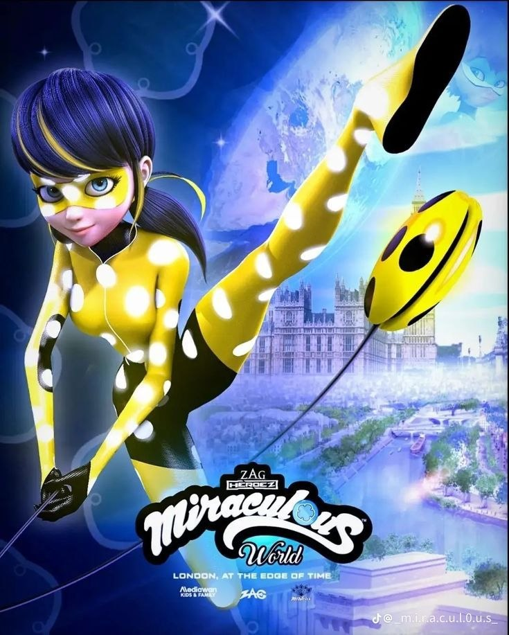
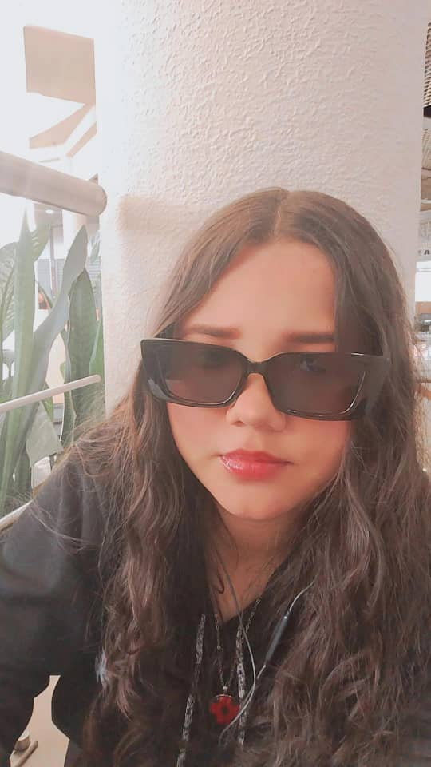
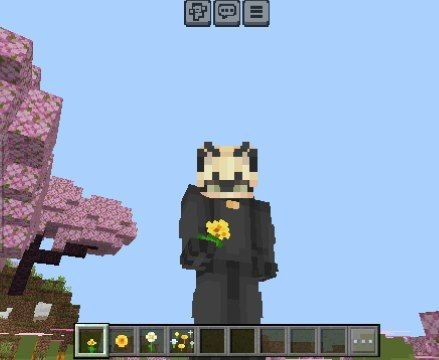

Este espacio es para ti, ladybug
Daniella, sé que me dijiste que no te regalara nada. Y probablemente debí haberte hecho caso.
Pero hay días que no se pueden dejar pasar en blanco. Y el 21 de septiembre, para mí, es uno de esos días.
No te escribo esto para pedirte algo. No lo hago para presionarte. No espero nada a cambio.
Te escribo porque no puedo fingir que este día no existe para mí cuando se trata de ti. Porque mi necesidad de demostrarte que te amo, así sea con pequeños detalles, es más grande que mi miedo a equivocarme.
No sé si este día significa algo para ti. Para mí sí. Significa que puedo decirte lo que normalmente me guardo. Significa que puedo ser honesto aunque me tiemble un poco la mano al escribir. Significa que, por un momento, dejo de esconderme detrás de sonrisas y silencios.
Y aunque me dijiste que no, aquí estoy. Con más verdad que miedo.

La pasé muy bien pasando el día contigo. Cuando estábamos juntos, quería prestar atención a ver si veías algo que te gustaba. Ya planeaba regalarte algo cálido y sencillo. Al día siguiente fui a jugar basket. Una vez que terminé, fui en busca de los regalos que quería darte.
Lo primero que quería darte eran flores. Pero necesitaba que fueran medianas, porque pensé que quizás no querías que tu tía las viera y no quería causarte problemas. Aun así necesitaba que fueran flores muy lindas y reales. Así, si las colocabas en tu escritorio mientras usabas tu laptop, iban a soltar un olor suave y calmante. Así me siento yo cuando estás cerca.
Sé que me dijiste que no querías flores. Pero no lo pude evitar. Seguí mi corazón y de verdad quería regalártelas. Las elegí y espero que te gusten. Sé lo mucho que te gustan las flores.
Luego entré a un centro comercial. Estuve un rato buscando cosas que te gusten, y de repente vi un par de medias que, apenas las vi, me recordaron a ti. Cuando las tengas, sabrás por qué. Recuerdo que un día anterior me dijiste que ojalá también te regalaran medias. Además, creo que son perfectas para tus pequeños y lindos piecitos. Creo que el diseño te va a gustar.
Después sentí que las flores amarillas estaban muy solas. Quería darte algo que hiciera juego con ellas. Fui a preguntar con una idea en la cabeza, y cuando confirmé que Ladybug en algún momento utilizó un traje amarillo, supe que quería comprarte un póster de Ladybug que hiciera juego con tus flores. Hace mucho tiempo me dijiste que cuando te sentías mal veías Miraculous y te hacía sentir mejor. Pienso que si tuvieras un póster de Ladybug que a la vez te transmitiera la calidez que yo quiero que sientas, directo de mi corazón con las flores amarillas, te gustaría mucho. Ojalá te guste. Sé que es raro que tengas un póster de Ladybug amarilla y no de rojo. Después te regalaré uno normal.
Después recordé que me dijiste que dentro de poco te daría la regla. Recordé también que te gusta el maíz tostado. Y sé que últimamente te gusta mucho comer, y quizás después tendrás antojos. Quería cubrir y encargarme de eso también. Caminé un rato hasta encontrarlo. Lo hice con gusto.
Sé que quizás pienses que no me puse en tus zapatos, porque me dijiste que no querías nada. Tal vez tengas tus razones, y no quiero que pienses que no lo entiendo. Solo que mi necesidad de demostrarte que te amo, así sea con pequeños detalles, es muy grande. Tenía que demostrarte de alguna manera, aunque sea un trocito de lo que siento por ti.
Solo me faltaba la excusa para poder ir a tu casa y pedírtelo. Y la encontré. Me diste la excusa perfecta para poder ir a verte. Y eso, para mí, ya valía todo.
En la primera llamada, cuando te estabas durmiendo, me preguntaste al día siguiente de qué hablamos. Déjame decirte lo que yo recuerdo.
Yo no paraba de decirte que te amaba. Y tú me decías que tú igual. Te dije que no cambiaría absolutamente nada de ti, que eres perfecta tal cual eres. Te amo con todo y eso. Dije que quería ser el papá de tus hijos, que nunca te dejaré, y que solo necesito una oportunidad para demostrártelo. Que en las noches, al dormir, le pido a Dios pasar tiempo contigo.
En la segunda llamada, los dos nos quedamos dormidos. Tú te quedaste dormida primero que yo. A cada 10 minutos te decía "te amo" y "te quiero". Pasó una hora, y luego yo fui el que se estaba quedando dormido.
La verdad no quería irme de esa llamada. No quería colgar. Me acosté a dormir y me quedé escuchando tus respiraciones. Con eso me bastaba para estar tranquilo. De verdad me gustó demasiado.

Te amo tanto, pero tanto, que cada que me duermo le pregunto a Dios de qué forma puedo acompañarte en un nuevo día.
Daniella, sé que me dijiste que no te regalara nada. Y lo entiendo, de verdad. Respeto tu espacio. Respeto tus tiempos. Respeto que a veces el corazón necesita tiempo para ordenarse.
Pero no puedo dejar que este día pase sin que sepas lo que siento por ti.
No sé si este día significa algo para ti. Para mí sí. Significa que puedo ser honesto. Significa que puedo decirte lo que normalmente me guardo. Significa que, por un momento, dejo de esconderme.
Aún tengo muchas cosas que saber. Quiero entender cómo es una relación para ti. Tengo muchas preguntas que solo el tiempo, y quizás si lo permites acompañándote, puedan responderse.
Lo que tengo claro es que sin duda alguna, YO te amo, Daniella.
Te digo todo esto porque necesitaba que lo supieras. Guardarlo ya no era una opción. Porque hay verdades que pesan demasiado cuando se callan. No es un peso para ti. No tiene que serlo. Es solo verdad. Mi verdad.
No sé cómo te vas a tomar lo de los regalos. Ni siquiera sé si me los vas a aceptar. Aun así tomo el riesgo. Quiero que estés feliz. Quiero hacerte feliz. Y si tú estás feliz, yo estoy feliz. Eso siente mi corazón.
Probablemente ni siquiera te esperes que te dé regalos. Ojalá sí llegues a leer todo esto. Acabo de salir de llamada. Esto es lo que estaba continuando cuando te dije que estaba haciendo algo. Te dije que estoy a la expectativa porque no sé cómo te vas a tomar todo esto. Pero no lo hago para recibir algo. Lo hago porque me nace del corazón y quiero verte feliz un segundo.
No te podía decir nada porque quiero que sea completamente una sorpresa.
Te amo tanto, pero tanto, que no puedo expresar lo enorme que se siente el amor hacia ti.
Gracias por existir, Daniella Milagros de Nazareth Martínez Gómez. Feliz 21 de septiembre.

Sabes, quizás notes que llegué un poco sudado. Es que mañana me espera una travesía. Tendré que caminar desde el Costa del Sol por la avenida Atlántico para retirar el póster, y luego caminar hasta Caura. Por eso te dije que quizás llegue como a las 12 y pico.
Con lo que te estoy diciendo aquí, quiero decir: estoy aquí para ti.
Actualmente soy el Eloy que no sabe qué va a ocurrir mañana, y espero que de verdad todo salga bien. Si tú estás leyendo esto, significa que al final aceptaste los regalos. Muchas gracias. Espero que te sientas un poquitito mejor. Si tú eres feliz, yo también lo soy.
Tener tu compañía se siente como lo mejor del mundo. Quiero que hagamos lo que nos haga felices. Estoy pensando en ti. Quiero entenderte mejor porque te amo. Tengo muy claro cómo me siento.
Sobre mi mamá: cuando tú estés leyendo esto, al llegar yo a mi casa culminaré de hablar con mis papás para que estén al tanto de todo.
Eres el amor de mi vida, Ladybug. Siempre te voy a querer acompañar. Te quiero, me gustas, te amo.
Cuando leas esto, tú estarás en el gimnasio o en tu casa. Esfuérzate mucho. Espero que te gusten los regalos, con mucho cariño de parte de Eloy Salazar (Elito).